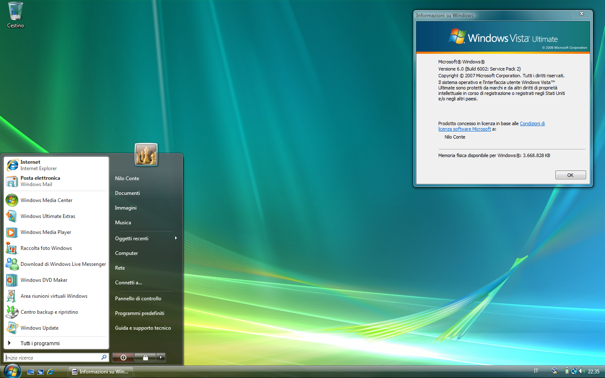
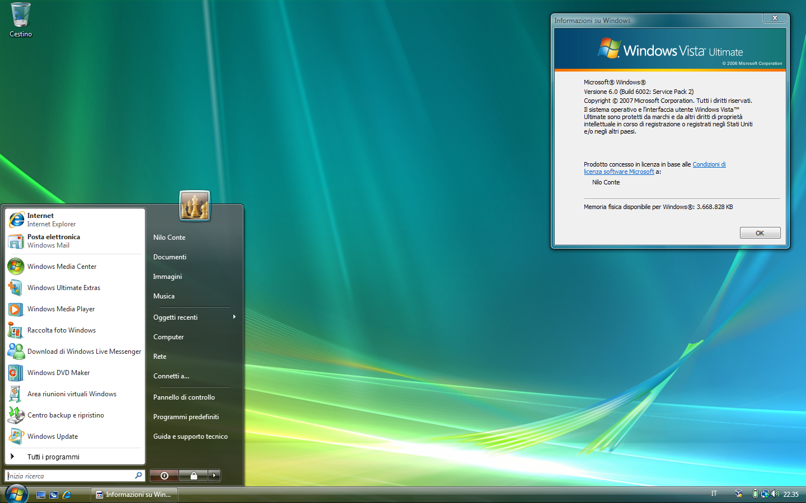
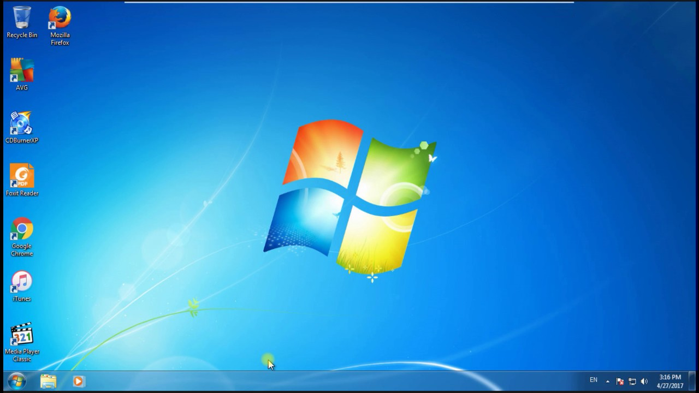
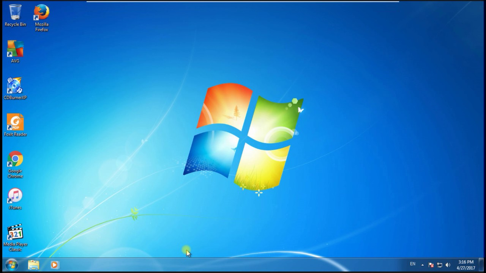

Windows ME (2000)
Windows ME, o Millennium Edition, se considera un fracaso en la historia de Windows debido a su inestabilidad. Aunque introdujo algunas mejoras en multimedia y conectividad, como Windows Movie Maker y Universal Plug and Play, no logró ganar la aprobación de los usuarios y fue ampliamente criticado. Este sistema marcó la transición hacia Windows XP.

Windows XP (2001)
Windows XP, conocido como Whistler en su desarrollo, sigue siendo recordado con cariño por muchos como la mejor versión de Windows hasta la fecha.
Unificó los productos de Microsoft para empresas y consumidores, lo que le otorgó mayor seguridad y estabilidad. Introdujo variantes como Windows XP Home Edition y Windows XP Professional. Con la gran actualización Service Pack 2, se añadieron muchas características nuevas. Se mantuvo en el mercado de 2001 a 2007, convirtiéndose en uno de los sistemas operativos más duraderos de Windows.

Windows Vista (2006)
Windows Vista, lanzado en 2006, fue un sistema operativo polémico. Aunque introdujo una nueva interfaz atractiva y se centró en la seguridad, como el Control de Cuentas de Usuario, irritó a los usuarios. A pesar de ventas iniciales sólidas, solo el 8% de las empresas estaban satisfechas en comparación con el 41% que prefería XP. A pesar de sus problemas, atrajo a los jugadores con DirectX 10.


Windows 7 (2009)
Windows 7, fue una evolución de Windows Vista con notables mejoras. Con nombres clave Blackcomb y Vienna, estaba disponible en versiones de 32 y 64 bits.
Este sistema operativo ofrecía un arranque más rápido, mejor gestión de energía para usuarios de portátiles y capacidades multitáctiles. Su eficacia hizo que Windows 8 tuviera un difícil acto de seguimiento.

